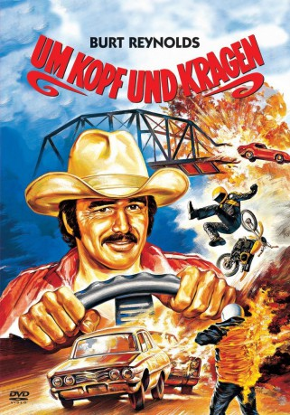
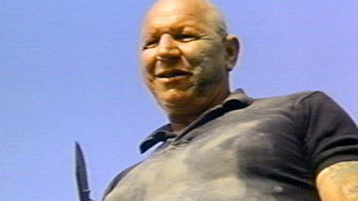

#7672 Um Kopf und Kragen
Alternativ: Hooper
Auszeichnungen: für 1 Oscars nominiert
 
 IMDB-Wertung: 6.2 / 10
IMDB-Wertung: 6.2 / 10  Metascore: 0
Metascore: 0 
Sonny Hooper ist die Nummer Eins unter den Stuntmen. Nach unzähligen Knochenbrüchen denkt er daran, den Job bald an den Nagel zu hängen. Sein letzter waghalsiger Coup soll ihm 50.000 Dollar bringen: der Sprung in einem raketenbetriebenen Auto über eine gesprengte Brücke. Da taucht Konkurrenz auf in Gestalt des ehrgeizigen Nachwuchs-Stuntman Ski. Noch einmal will der alte Hase Hooper es allen zeigen. Burt Reynolds, der seine Super-Karriere selbst als Stuntman begann, zeigt in halsbrecherischen Szenen, die nicht gedoubelt wurden, sein ganzes Können.
Jahr: 1978
Dauer: 99 Minuten
FSK: 12
Land: USA Studio: Warner Bros A Warner Communications CompanyTonspuren:
Untertitel:
Auflösung: 1080p (1920x1080) Größe: 8140 MB
Genre: Action, Komödie
Regisseur: Hal Needham
Drehbuch: Thomas Rickman
Soundtrack: Bent Myggen
Darsteller:
 Burt Reynolds als Sonny Hooper
Burt Reynolds als Sonny Hooper Jan-Michael Vincent als Ski
Jan-Michael Vincent als Ski Sally Field als Gwen
Sally Field als Gwen Brian Keith als Jocko
Brian Keith als Jocko- John Marley als Max Berns
 Robert Klein als Roger Deal
Robert Klein als Roger Deal James Best als Cully
James Best als Cully Adam West als Adam
Adam West als Adam Terry Bradshaw als Sherman
Terry Bradshaw als Sherman George Furth als Bidwell
George Furth als Bidwell Don 'Red' Barry als Sheriff
Don 'Red' Barry als Sheriff-  Robert Tessier als Amtrac
- Peter Craig als Pete
 Buddy Joe Hooker als Stunt Rigger on Roof , uncredited
Buddy Joe Hooker als Stunt Rigger on Roof , uncredited Charles A. Tamburro als Helicopter Pilot , uncredited
Charles A. Tamburro als Helicopter Pilot , uncredited- Alfie Wise als Tony
- Norman Grabowski als Hammerhead
- Jim Burk als Jimbo
- Princess O'Mahoney als Wanda
- Richard Tyler als Doctor
- Tara Buckman als Debbie
- Hal Floyd als Cliff
- Ray Bickel als Crew Member
- Rex Benson als Crew Member
- R.G. Allen als Crew Member
- Mark Montgomery als Crew Member
- Linda McClure als Crew Member
- Kent Lane als Kent
- Christa Linder als Actress
- Kris Goddard als Joanie
- Robert Hackman als Rick
- John Marshall als Chuck
- Laura Lizer Sommers als Barmaid
- Roxanne Brewer als Girl jumping out of birthday cake , uncredited
- William H. Burton Jr. als Billy Burton, stuntman , uncredited
- Mary Moon als (uncredited
- Dave Mungenast Sr. als Motorcycle Cop , uncredited
- Greg Topper als Piano Player , uncredited
Datei: X:\1978\Um Kopf und Kragen (1978, FSK12, 1920x1080).mkv seit 30.11.2017
Festplatte: HD 1971-1979
 Es gibt insgesamt 31 Filme in der Gruppe '1978'
Es gibt insgesamt 31 Filme in der Gruppe '1978'